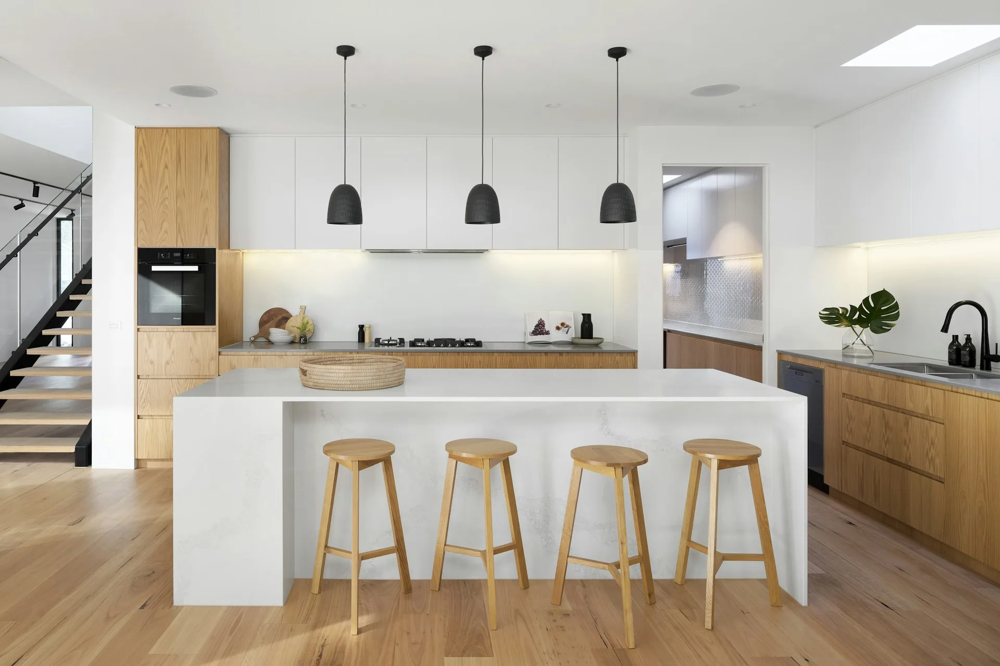

Est. 2008
Shropshire, England
Shropshire, England
Our Founding Story
Born from a single chair.
Arboris Studio was founded in 2008 by master craftsman Thomas Mercer, who left a career in architecture to return to working with his hands. He built his first chair in a converted barn in Shropshire — and has never stopped.
"The satisfaction of architecture was always in the detail. Wood taught me the detail could be everything."
What began as a solo practice has grown into a studio of four dedicated craftspeople, each with a specialism — joinery, finishing, upholstery, and timber sourcing. Together, they produce between 30 and 40 bespoke pieces each year.
The name Arboris — from the Latin arbor, meaning tree — reflects our fundamental belief: every piece of furniture begins its life as a living thing. We honour that.